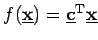

Inhalt Index DeskTop Bronstein

 Optimierung Lineare Optimierung Grundbegriffe der linearen Optimierung, Normalform Ecke und Basis
Optimierung Lineare Optimierung Grundbegriffe der linearen Optimierung, Normalform Ecke und Basis


Die Bedeutung der Aussagen über die Ecken des zulässigen Bereiches M wird im folgenden Satz deutlich.
Ist M nicht leer und die Zielfunktion  auf M nach oben beschränkt, so ist mindestens eine Ecke von M ein Maximalpunkt.
Eine lineare Optimierungsaufgabe kann somit gelöst werden, indem unter allen Ecken eine mit maximalem Funktionswert bestimmt wird. Da aber die Anzahl der Ecken von M in praktischen Problemstellungen sehr hoch sein kann, ist eine Methode erforderlich, die eine optimale Ecke zielsicher ansteuert. Eine solche Methode ist das Simplexverfahren, auch Simplexalgorithmus genannt. Zu seinem Einsatz ist eine geeignete Darstellung der linearen Optimierungsaufgabe erforderlich, aus der eine Ecke direkt abgelesen werden kann.